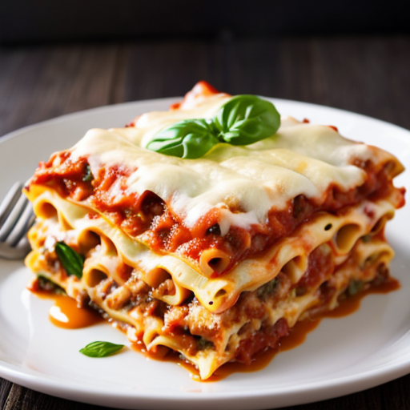

Lasagna Recipe

This is a recipe for homemade lasagna!
Lasagna is a hearty, layered Italian dish made with sheets of pasta, rich meat or vegetable sauce, creamy ricotta cheese, and plenty of melted mozzarella. Baked to golden perfection, it has a satisfying blend of textures—tender pasta, gooey cheese, and a flavorful, savory filling. Often seasoned with garlic, basil, and oregano, lasagna is a comforting, crowd-pleasing meal perfect for family gatherings or a cozy night in.
Ingredients
For the Meat Sauce:
- 1 lb ground beef
- 1 small onion, diced
- 2 cloves garlic minced
- 1 can (28 oz) crushed tomatoes
- 1 can (15 oz) tomato sauce
- 1 can (6 oz)tomato paste
- 1/2 cup water
- 1 tsp dried basil
- 1 dsp dried oregano
- 1/2 tsp salt
- 1/2 tsp black pepper
- 1/2 tsp red pepper flakes (optional)
For the Cheese Filling:
- 1 container (15oz) ricotta cheese
- 1 egg
- 1/2 cup grated parmesan cheese
- 2 cups shredded mozzarella cheese
- 1 tbsp chopped fresh parsley (or 1 tsp dried)
Other Ingredients:
- 12 Lasagna noodles (cooked according to package instructions)
- 1-2 cups additional shredded mozzarella for topping
Instructions
- Prepare the Meat Sauce
- In a large skillet over medium heat, cook the ground beef or Italian sausage until browned. Drain excess fat if needed.
- Add diced onion and cook until softened, about 3 minutes. Stir in minced garlic and cook for another 30 seconds.
- Add crushed tomatoes, tomato sauce, tomato paste, and water. Stir to combine.
- Season with basil, oregano, salt, black pepper, and red pepper flakes (if using). Simmer on low heat for 20-30 minutes, stirring occasionally.
- Prepare the Cheese Mixture
- In a medium bowl, mix ricotta cheese, egg, Parmesan cheese, and chopped parsley until well combined.
- Cook the Lasagna Noodles
- Bring a large pot of salted water to a boil. Cook lasagna noodles according to package instructions until al dente. Drain and lay them flat on a baking sheet to prevent sticking.
- Assemble the Lasagna
- Preheat oven to 375°F (190°C).
- In a 9x13-inch baking dish, spread a thin layer of meat sauce on the bottom.
- Lay 3-4 lasagna noodles over the sauce, slightly overlapping.
- Spread a layer of the ricotta mixture over the noodles, then sprinkle some shredded mozzarella on top.
- Repeat layers (sauce, noodles, ricotta, mozzarella) until all ingredients are used, finishing with a layer of sauce and shredded mozzarella on top.
- Bake
- Cover with foil and bake for 25 minutes. Remove foil and bake for another 15 minutes, until the cheese is melted and bubbly.
- Let the lasagna rest for 10-15 minutes before slicing and serving.
- Enjoy!
Home